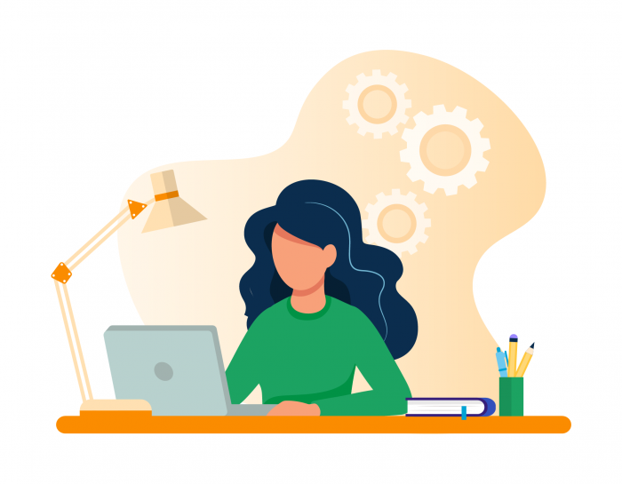

Hakkımda
Ben Kimim?
Merhaba, ben Derya Çakır. 5 Mayıs 2000 tarihinde Bandırma'da doğdum ve burada ailemle yaşıyorum. Bandırma Onyedi Eylül Üniversitesi, Elektronik ve Haberleşme Mühendisliği bölümü 2.sınıf öğrencisiyim. Aynı zamanda Bilgisayar Mühendisliği bölümünden çift anadal yapıyorum.
{kind=link}
{kind=link}

Eğitim Hayatım
2007 yılında Bandırma'da Vecihibey İlköğretim Okulu'nda eğitimime başladım. 8 yıl boyunca bu okulda eğitim aldım. Bu yıllarda satranç ve resime ilgi duyduğumu fark ettim. Bu sebeple; satranç kursuna başladım, ilerleyen zamanlarda turnuvalara katıldım. Bir yandan da resim ile ilgili çalışmalarıma devam ettim ve resim yarışmalarına katıldım.
Sonrasında Bandırma Anadolu Lisesi'ni kazandım. 4 yıl boyunca bu lisede eğitimime devam ettim. Hayalim, başarılı bir mühendis olmaktı. Daha sonra üniversite sınavına girdim. Bu doğrultuda tercihlerimi yaptım. 4.tercihim olan Bandırma Onyedi Eylül Üniversitesi'ni, Elektronik ve Haberleşme Mühendisliği bölümünü kazandım. Aklımda 2 şey vardı. Bunlardan ilki Erasmus, bir diğeri ise mühendislikte çift anadal yapabilmek. Erasmus için yabancı dilimi daha iyi hale getirmem gerektiğini biliyordum. Bu sebeple Hazırlık okumamın faydalı olabileceğini düşündüm ama bölümümde zorunlu değildi. İsteğe bağlı hazırlık okudum ve C1 seviyesini başarıyla tamamladım. Ardından 1.sınıfın Güz Döneminde Erasmus sınavına girdim ve başarıyla geçtim. Fakat pandemi sebebiyle henüz gidemedim. O sırada Çift Anadal yapmak için süreçleri takip etmeye başladım. Bir yandan da notlarımı yüksek tutmaya çalışıyordum. Başvurdum ve kabul edildi. 2.sınıfın güz döneminde Bilgisayar Mühendisliği bölümünden çift anadal yapmaya başladım, hala devam etmekteyim.
Bunlara ek olarak okuldaki topluluk ve faaliyetlere katıldım. Satranç ve resimin yanı sıra dansı da deneyimlemek istediğim için "Latin Dans Topluluğu" ve "Halk Oyunları Topluluğu" na katıldım. Dansa hep merakım vardı fakat bu alanda herhangi bir ders almamıştım. Benim için güzel bir tecrübe oldu. Daha sonra "Havacılık ve Uzay Topluluğu","IEEE (Institute of Engineers and Everyone Else)","Sosyal Etkinlik ve Eğlence Topluluğu"na da katıldım. Toplulukların, sosyalleşmek, yeni insanlarla tanışmak ve bakış açılarını genişletmek için üniversitenin bizlere sunduğu güzel fırsatlar olduğunu düşünüyorum. Ardından katıldığım bir toplulukta roket takımı oluşturulduğunu öğrendim ve takıma dahil oldum. Bu roket takımında yaklaşık 2 senedir Teknofest yarışması için çalışıyoruz. Umarım bu projeyi de başarı ile tamamlarız.